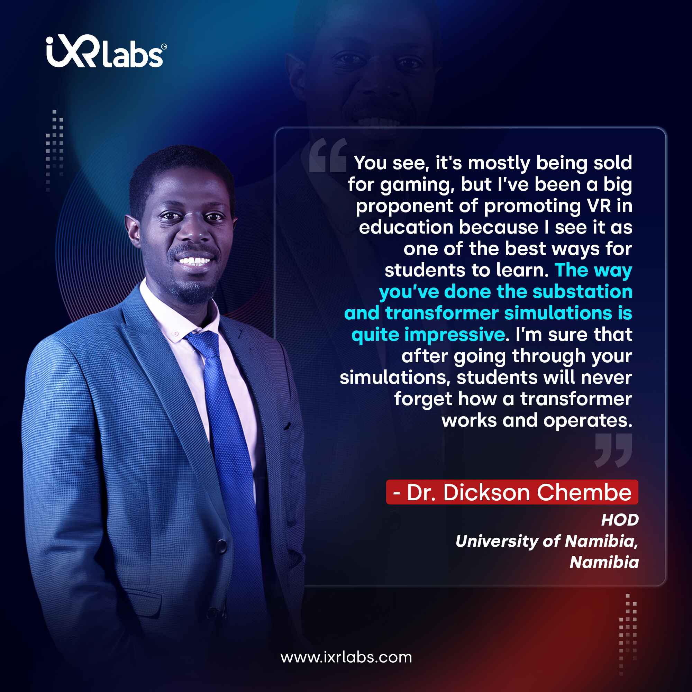
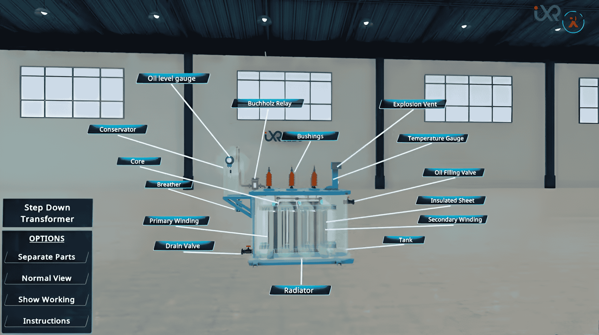

In recent years, the application of virtual reality in education has changed the way students learn about complex concepts, especially in fields like electrical engineering. Transformers, which are crucial components in electrical power systems, can be understood more deeply using VR.
Electrical engineering students now have the ability to interact with and explore transformer simulations in immersive virtual environments. This not only enhances their understanding but also makes learning more engaging and hands-on.
The use of VR in teaching transformers in electrical engineering can help simplify the learning process by allowing students to visualize and manipulate different transformer types without the limitations of physical models.
In this article, we will look at how professors can teach specific types of transformers, including the three-phase step-down transformer, potential transformer, dry-type transformer, core-type transformer, and shell-type transformer, using VR technology.
How VR Can Teach Different Types of Transformers in Electrical Engineering
VR brings the concept of transformer simulation VR to life by allowing students to interact with various transformer types in a controlled virtual environment. Professors can leverage VR to demonstrate the operation, design, and real-world applications of each transformer type, ensuring that students gain a practical understanding of the material.

Here’s how each transformer type can be taught effectively using VR:
1. Three Phase Step Down Transformer
The three-phase step-down transformer is one of the most commonly used transformers in power systems. It is used to step down high voltages from the power grid to lower voltages suitable for residential or commercial use. Teaching this transformer in a traditional classroom setting can be challenging because of its complex operation and construction.
How VR can help: Using VR, instructors can simulate the operation of the step down transformer in real time. Students can interact with 3D models to visualize how the transformer reduces voltage in a three-phase system. They can observe how current flows through the primary and secondary windings and explore the effects of various load conditions.
In VR, students can experiment with different input and output voltages, load variations, and even fault conditions to see how the transformer responds.
Key Learning Outcomes in VR:
● Explore and manipulate each part of a step-down transformer to understand its structure.
● Dismantle components with a single click to study individual elements like windings and cores.
● Use X-ray view to locate internal components and trace the voltage reduction pathway.
● Switch to working mode to observe how high-voltage AC is converted to lower voltage for safe distribution.
2. Potential Transformer
A Potential Transformer is used to measure high voltages in power systems by stepping down the voltage to a manageable level for measurement and control. Teaching how this transformer works requires an understanding of both its design and its function in voltage measurement.
How VR can help: In a VR environment, instructors can demonstrate the construction of a Potential Transformer, allowing students to see the primary and secondary winding arrangement and the voltage step-down process. Students can also observe how the transformer isolates measuring instruments from high-voltage circuits. Through VR-based simulations, they can experiment with different voltage inputs and observe how the Potential Transformer responds in various circuit configurations.
Key Learning Outcomes in VR:
● Explore each part of a potential transformer designed for voltage measurement in high-voltage systems.
● Instantly dismantle components like primary windings, secondary windings, and insulation layers to see their function.
● Use X-ray view to examine the precise positioning of coils and magnetic core.
● Activate working mode to visualize how the PT steps down voltage for safe metering and relaying.
3. Dry Type Transformer
The Dry Type Transformer is widely used in areas where safety and minimal fire risk are crucial, such as indoor environments or places with high human traffic. Unlike oil-filled transformers, Dry Type Transformers are cooled by air, making them safer and more environmentally friendly.
How VR can help: In VR, students can explore the design and working principles of Dry Type Transformers. They can see how air-cooled systems are integrated into the transformer to manage heat dissipation. VR allows for a deep dive into the internal structure of the transformer, showing how the windings are constructed and cooled. Students can also experiment with various load conditions and see how temperature impacts the performance and efficiency of the transformer.
Key Learning Outcomes in VR:
● Explore the insulation-free, air-cooled design of dry-type transformers.
● Dismantle the cast resin components and windings to understand how it handles heat and moisture.
● Use X-ray mode to inspect internal coil spacing, core material, and cooling gaps.
● View the working model to observe safe voltage transformation without oil as coolant.
4. Core Type Transformer
A Core Type Transformer is commonly used in industrial and power generation settings. It features a magnetic core that is encased by two or more coils. This transformer type is typically used in medium- to large-scale applications and is known for its efficient design in handling power distribution.
How VR can help: In a VR simulation, professors can show the internal structure of the Core Type Transformer, enabling students to understand how magnetic flux is channeled through the core and how energy is transferred between the coils.
The virtual environment can allow students to dissect the core's design, exploring how materials like silicon steel are used to enhance efficiency. Additionally, VR can demonstrate how core saturation and eddy currents impact transformer performance.
Key Learning Outcomes in VR:
● Interact with the vertical limb and yoke configuration of a core-type transformer.
● Separate the windings and core structure with a single click to understand the assembly.
● Use X-ray view to see how windings are placed concentrically around the core limbs.
● Watch the transformer in action and understand how flux circulates within the core during operation.
5. Shell Type Transformer
A Shell Type Transformer is a variation of the core type but features a different design, where the core surrounds the windings. This transformer design offers advantages such as better short-circuit protection and improved durability, making it suitable for demanding industrial applications.
How VR can help: Using VR, students can explore the Shell Type Transformer from every angle, analyzing how the core surrounds the windings and how this design contributes to stability and fault tolerance.
Professors can simulate various operational scenarios to demonstrate how the transformer handles mechanical stress and electrical faults. Students can also adjust parameters like the number of windings or the transformer’s core material to observe how design changes affect performance.
Key Learning Outcomes in VR:
● Navigate through the sandwich-type construction with the core encasing the windings.
● Instantly break apart the shell structure to explore vertical and horizontal core sections.
● Use X-ray view to observe how the magnetic path flows through the shell design.
● Activate the working mode to study magnetic flux distribution and coil function in real-time.
Benefits of Teaching Transformers with VR


✔️Enhancing Practical Knowledge with Virtual Labs
One of the main benefits of using VR to teach transformers in electrical engineering is the ability to engage students in immersive labs that would be difficult to recreate in traditional classrooms. These interactive transformer simulations allow students to visualize the construction, operation, and troubleshooting of different transformers in a way that feels lifelike and practical.
✔️Real-Time Experimentation and Immediate Feedback
In VR, students can experiment with various transformer designs and configurations without the fear of damaging expensive physical equipment. They can test different operating conditions, load types and fault scenarios, gaining hands-on experience without real-world consequences.
Additionally, real-time feedback during VR-based lessons helps students quickly identify errors and refine their understanding.
✔️Remote and On-Demand Learning
The flexibility of VR also allows electrical engineering students to access transformer simulations at any time, regardless of their location. Whether in an on-campus lab or working remotely, students can continue their learning with AI-powered virtual labs, making VR a highly versatile tool in modern engineering education.
The Growing Influence of VR in Education
Recent studies have shown that VR technology is making a significant impact on education, particularly in engineering fields. According to a report by the ISRED, the adoption of VR in engineering education has increased by 32% over the past five years, with many universities incorporating VR labs for teaching complex subjects like electrical engineering.
 Get the App from Meta Store: Download Now
Get the App from Meta Store: Download Now
In a survey conducted by EdTech Magazine, 78% of engineering professors stated that they believe VR provides a more effective way of teaching difficult concepts compared to traditional methods.
Furthermore, 85% of students who participated in VR-based learning reported a better understanding of technical subjects such as electrical machines, transformers, and power systems.
Another report by Future Market Insights suggests that the global VR education market is expected to grow at a compound annual growth rate (CAGR) of 38.6% from 2025 to 2030. This rapid growth underscores the increasing importance of VR in transforming educational practices and suggests that VR could become an essential tool in universities teaching subjects like electrical engineering.
These statistics reflect a significant shift in how educational content is delivered, with VR providing an immersive, interactive, and effective learning experience for electrical engineering students.
Conclusion: The Future of Transformer Education in Electrical Engineering
The integration of VR technology in teaching transformers in electrical engineering provides a unique opportunity to enhance the learning experience. By immersing students in transformer simulations VR, professors can simplify the complexities of transformer design and operation, offering a hands-on approach that traditional textbooks and lectures cannot match.
As VR technology continues to evolve, vr applications in engineering education will expand, providing electrical engineering students with increasingly advanced tools to explore and master the world of transformers, from Three Phase Step Down Transformers to Shell Type Transformers. With VR, the future of transformer education looks more interactive, engaging, and accessible than ever before.
With iXRLabs’ innovative VR solutions, you can enhance your curriculum and prepare the next generation of engineers for real-world challenges.
Ready to take your engineering education to the next level? Book a Demo today and start transforming the way students learn.